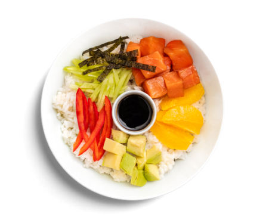

Mixed salad with rice and vegetables
Ideal for busy households, this salad keeps well in the fridge, ready to be spooned into a bowl whenever you're peckish. This salad is packed with pulses and should be enough of a carb hit that you don’t need to serve potatoes as well.
Contents
Total Weight 300g
Rice
Avocado
Bell pepper
Cucumber